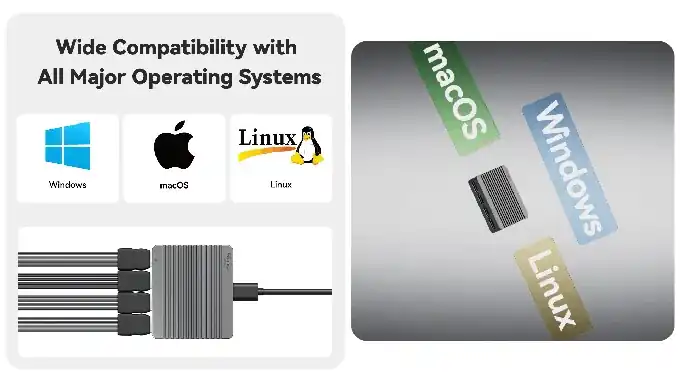
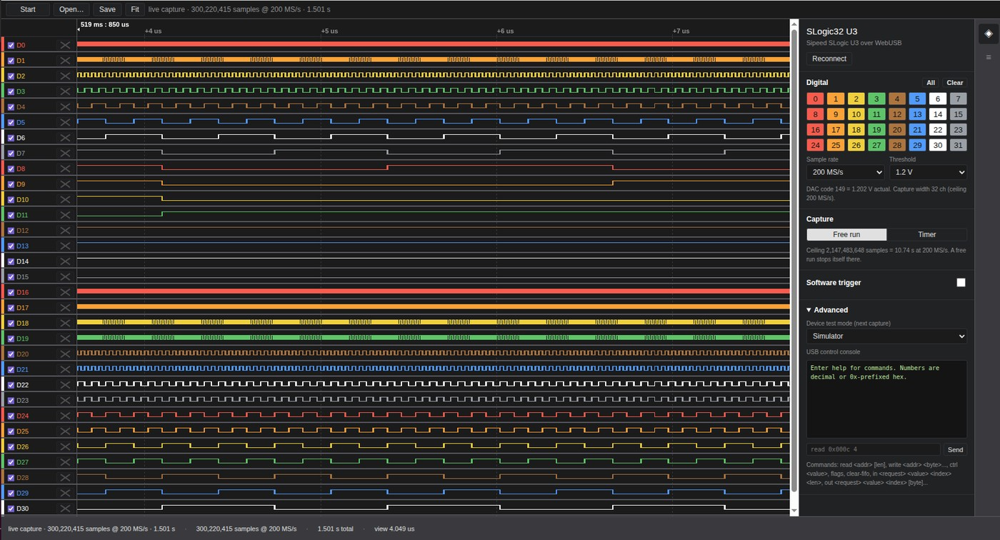
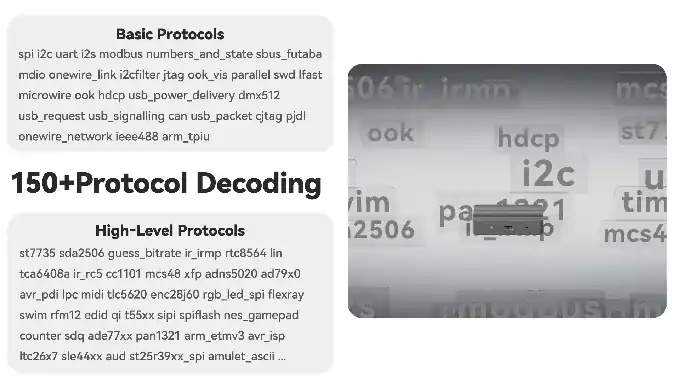
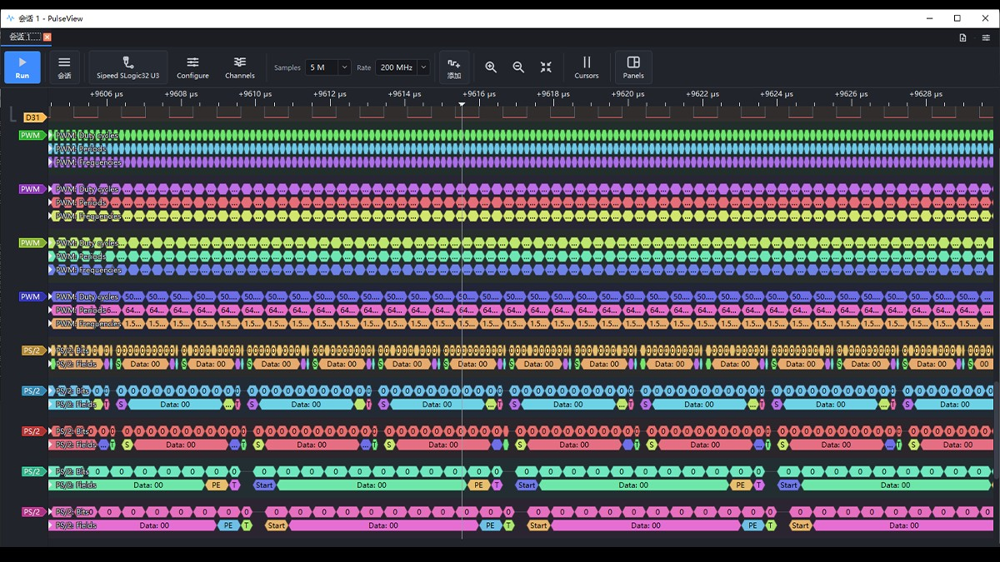

English
EnglishSLogic32U3 Software Guide
Update history
| Date | Version | Author | Update content |
|---|---|---|---|
| 2026-10-06 | v0.3 | Sipeed |
|
| 2026-10-06 | v0.2 | Sipeed |
|
Software Guide
The SLogic32U3 can be driven by several host apps. This page helps you choose first, then covers each one. For wiring see the Hardware Guide; for first use see the Quick Start.
Pick a host app first
Use SLogicView by default. It is Sipeed's own, maintained GUI and the current direction; it is enough for the vast majority of debugging tasks.
| Host app | Strength | Who it's for | Install |
|---|---|---|---|
| SLogicView | Sipeed's own, maintained GUI, the default | Most people | needs install |
| ngscopeclient | GPU-accelerated rendering, Filter Graph, mixed signal | complex analysis; ADC module as a scope | needs install |
| sigrok-cli | command line, scriptable | automation, CI, headless capture, AI Agent | needs install |
| ALL LOGIC | a fine community app, built on DSView | users familiar with DSView / DSLogic | needs install |
| SLogicWeb (web) | no install, no driver, Android support | quick debugging, phone/tablet, no software | no install |
ALL LOGIC is a community project, built on top of DreamSourceLab's open-source DSView; Sipeed has contributed to it. If you are used to DSView it will feel right at home.
About "no install": desktop apps all need downloading and installing or unpacking first. The only thing you truly just open in a browser is the web app slogic.sipeed.com.

Download
All desktop apps are in the same Release; pick the file for your platform:
| Platform | File suffix | How to run |
|---|---|---|
| Windows 10/11 x64 | -windows-x86_64.exe |
run directly |
| Linux x86_64 | -linux-x86_64.AppImage |
chmod +x, then run |
| macOS (Apple Silicon) | -macos-arm64.dmg |
open the dmg to run directly, or drag into Applications |
- GitHub Release (recommended): https://github.com/sipeed/SLogic/releases/latest
- Download site (backup mirror): https://dl.sipeed.com/shareURL/SLogic
- libsigrok driver name:
sipeed-slogic-analyzer
SLogicWeb (web app)
Open slogic.sipeed.com and you are ready — the fastest way to start and the only truly download-free, install-free one.

The screenshot above is an actual capture with the SLogic32U3 connected in a browser: all 32 channels on, 200 MS/s real-time, the status bar showing 300 million samples received. The right panel sets sample rate, threshold, trigger and capture mode directly — no less capable than the desktop.
Features
- No install, no driver: nothing to download, the browser connects the device directly.
- Android support: open it in Chrome on a phone or tablet and capture — great in the field.
- Remembered grant: the first connection shows a device picker; once authorized, the site remembers it.
- Offline analysis: open existing
.srand.lwcapwaveform files without a device attached. - Full-speed capture: 32 channels at 200 MS/s run just as fast in the browser; the web app is not a cut-down version.
Browser requirements
The web app talks to the device over WebUSB, so a Chromium-based browser is required:
- Works: Chrome, Edge, Brave (desktop and Android)
- Does not work: Firefox, Safari (no WebUSB)
If the page says
WebUSB is unavailable in this browser, your browser is unsupported — switch to Chrome or Brave.
Steps
- Open slogic.sipeed.com in Chrome.
- Click Connect device, pick the SLogic16/32 U3 in the dialog and authorize it.
- Set sample rate, channels and threshold, then click Start.
- Use Fit to auto-zoom the waveform, Save to store a
.lwcap. - An existing waveform file can be loaded directly with Open….
SLogicView
[!NOTE]
The decoder-list figures in the Protocol decoding section still use PulseView screenshots from the same code base (identical decoders and workflow); the rest are now actual SLogicView captures and screen recordings.
Connect the device
Best practice: connect the device to a USB3 port first, then launch the app so it auto-detects on startup.
If the app is already running, click Connect to Device, choose the driver, click Scan, then select the device found.
The main window has a few areas:
- Top toolbar: device selection, capture depth, sample rate, run/stop, zoom and cursor tools
- Left channel bar: channel on/off, color, voltage threshold
- Center waveform area: waveform display, decode annotations
- Decoder panel: add and configure protocol decoders
If no device is found, first check the ACT indicator is cyan. Blue only means the USB3 link is not established. On Linux also confirm the udev rule is installed. See the FAQ.
Stream capture
The SLogic32U3 uses Stream mode: data streams back to the host in real time, so capture length is unlimited in theory, bounded only by disk. The onboard 2 Gbit DDR3 acts as an elastic buffer to smooth USB jitter, sustaining 800 MB/s (6.4 Gbps) in practice.
This means no trade-off between "capture depth" and "sample rate" — you can capture continuously for a long time without being capped by device-side buffer size.
Sample rate vs channel count
| Channels on | Max sample rate | Data rate |
|---|---|---|
| 4 ch | 1400 MHz | 5.6 Gbps |
| 8 ch | 800 MHz | 6.4 Gbps |
| 16 ch | 400 MHz | 6.4 Gbps |
| 32 ch | 200 MHz | 6.4 Gbps |
8 / 16 / 32 channels all hit the 6.4 Gbps bandwidth ceiling; 4 channels are bounded by the 1400 MHz max sample clock.
Fewer channels on, higher sample rate available — but only in fixed groups; you cannot pick arbitrary channels:
- 4 channels → fixed D0–D3
- 8 channels → fixed D0–D7
- 16 channels → fixed D0–D15
- 32 channels → all D0–D31
The enabled set is always the contiguous low channels starting at D0. Arbitrary channel combinations are not supported (e.g. you cannot capture only D5, D10, D20 at a high rate). When wiring, connect the signals you want to capture fast to contiguous channels starting at D0.
For reference, the USB3.0-based DreamSourceLab DSLogic U3Pro32 in Stream mode is roughly 16ch@125MHz, 32ch@50MHz (per its public datasheet); the SLogic32U3 is 16ch@400MHz, 32ch@200MHz, about 3–4× the stream rate.
The clip above: switching the channel count (32 / 16 / 8 / 4) in the Configure panel changes the available sample rate.
Captured channels can be recolored, resized and reordered in the view so related buses sit together (display only, does not affect capture):
How to choose the sample rate
- Rule of thumb: 10–100× the highest frequency of the signal.
- Too low and you miss edges, distorting the waveform or failing the decode.
- Too high and you capture meaningless glitches while using more memory and disk.
- Sample rate × depth sets the storage used; confirm free disk before a long capture.
Voltage threshold
Set the logic decision threshold in the left channel bar, 0–6 V in 0.1 V steps. Below it = 0, above it = 1. For suggested thresholds per logic level see the Hardware Guide.
Triggers
The SLogic32U3 supports multi-channel, multi-edge combination triggers. You can set rising, falling, any-edge or level conditions per channel and combine them, and there is a pre-trigger to see what happened before the event.
| Scenario | Trigger setting |
|---|---|
| Catch one UART frame | RX falling edge (start bit) |
| Catch an I²C transaction | SDA falling while SCL high (start condition) |
| Catch an SPI chip-select cycle | CS falling edge |
| Catch a reset anomaly | RESET falling edge |
Browsing and cursor measurement
| Action | How |
|---|---|
| Pan the view | hold the left button and drag |
| Horizontal zoom (time) | scroll wheel, or − / + |
| Horizontal pan (time axis) | Shift + wheel, or Alt + wheel |
| Vertical pan | Ctrl + wheel |
Add cursors from the Cursors toolbar button, then measure the time between two points to derive baud rate, pulse width, event interval and so on.
Protocol decoding


SLogicView decoding a live PWM signal.
The sigrok ecosystem offers 150+ protocol decoders covering I²C, SPI, UART, CAN, SDIO, 1-Wire, USB, Modbus and other common buses.
- Open the Decoder panel and choose the protocol.
- Configure the pin mapping, matching each decoder signal to the wired channel.
- Configure protocol parameters: baud rate, byte order, clock polarity/phase, CS polarity, etc.
- The decoded result overlays as annotations below the waveform; click for details.
- Decoders can be stacked — e.g. put
eeprom24xxon top of I²C to read memory transactions directly.
Common reasons a decode fails:
| Symptom | Usually |
|---|---|
| No decode output at all | wrong pin mapping, or wrong protocol params (baud, polarity) |
| Fragmented output, many errors | sample rate too low; raise it and recapture |
| The waveform itself looks blocky/distorted | threshold off, or sample rate too low |
| Occasional bad frames | poor grounding; add a ground close by |
Empty output only means the current config produced no annotations, not that there is no traffic in the waveform. Go back to the waveform and confirm the levels are changing.
File operations
- Save session: saves samples, channel config, trigger and decoder state.
- Export: CSV, VCD and more; VCD opens in GTKWave.
- Import: load an existing
.srwaveform directly; offline analysis needs no device.
ALL LOGIC (community project)
ALL LOGIC is a fine community-maintained host app, built on DreamSourceLab's open-source DSView (which itself derives from sigrok's PulseView).
Its idea is a multi-vendor universal host app: on top of the original DSView code it adds community drivers for various logic analyzers, so one app drives many devices on the market.
Who it's for: if you are already used to the DSView or DSLogic interface, ALL LOGIC works exactly the same — zero migration cost.
Supported devices include the Sipeed SLogic Combo 8 / 16U3 / 32U3, the CH32H417 open-source logic analyzer, PXLogic32U3, ALIENTEK ATK-Logic, nanoDLA / FX2 and more; the DreamSourceLab instruments DSView already supported still work.
Other features:
- A built-in MCP interface, so an AI client can drive capture and decode directly.
- Shares the libsigrok family of drivers and decoders with the official apps, so protocol coverage matches.
ALL LOGIC is community-maintained; report issues and requests on its project Issues.
ngscopeclient
For scenarios needing GPU-accelerated rendering, Filter Graph analysis and mixed-signal observation. For full install and connection see the ngscopeclient guide.
32U3 notes:
- Single binary, all-UI config: just run it; connection, capture mode and parameters are all set in the UI.
- Connect the device: add and select the SLogic device in the UI; once connected, the channel panel shows 32 channels.
- Filter Graph: unifies protocol decode, math and measurement as Filter nodes you can chain.
- ADC analog mode: once enabled in the UI, it merges digital pins into 4 analog channels A0–A3 (8-bit) for scope-style observation. Requires the optional ADC module.
sigrok-cli (command line)
For automation, CI and headless capture.
# scan devices
sigrok-cli --scan
# read device capability (supported sample rates, channels, etc.)
sigrok-cli -d sipeed-slogic-analyzer --show
# capture: only D0, 500k samples at 10 MHz, save as .sr
sigrok-cli -d sipeed-slogic-analyzer \
--config samplerate=10m -C D0 \
--samples 500k -o capture.sr
# decode an existing waveform
sigrok-cli -i capture.sr -P uart:rx=D0:baudrate=115200 -A uart
# export to VCD for GTKWave
sigrok-cli -i capture.sr -O vcd > capture.vcd
Common options:
| Option | Meaning |
|---|---|
--config samplerate= |
sample rate, e.g. 10m, 200m |
-C |
channels to enable, comma-separated, e.g. D0,D1,D2 |
--samples |
number of samples |
--time |
capture duration (ms), alternative to --samples |
--triggers |
trigger condition, e.g. D0=f for D0 falling edge |
-P |
protocol decoder and its parameters |
-o / -i |
output / input waveform file |
Capture time (s) = samples ÷ sample rate. For example, 500k samples at 10 MHz is 50 ms.
Known Limits
| Limit | Notes |
|---|---|
| Trigger (ngscopeclient) | the ngscopeclient integration currently supports single-channel, single-edge triggers only. For multi-channel or multi-edge combinations use SLogicView or sigrok-cli |
| Rate drops with channel count | 8 / 16 / 32 channels already hit the 6.4 Gbps ceiling and cannot go higher; trade channels for a higher rate |
| Long capture bounded by disk | Stream mode is unlimited in theory, but rate × depth directly sets disk usage |
| Web app browser requirement | SLogicWeb relies on WebUSB; Firefox and Safari do not work |
| ADC with digital capture | the optional ADC module takes the corresponding digital pins; whether both run together depends on channel allocation, go by the actual unit |
AI Agent integration
With sigrok-cli-slogic-plugin, you can let an Agent run scan, capture and decode for you in natural language. See the full guide at SLogic with an AI Agent.